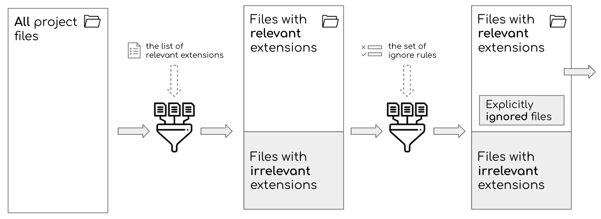
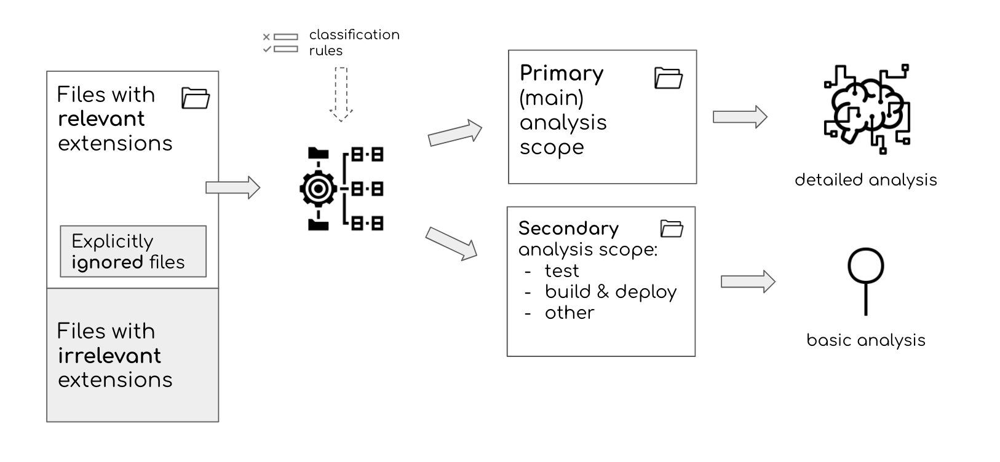

Scoping
“How many things can I do without!” ― Socrates, Momentos
When analyzing source code, you need to be strict in what you want to analyze and reject the rest. Otherwise, you will also end up publishing big, complex, and useless reports. The code that developers wrote manually is the most important. It contains critical content for understanding the system’s unique structure, logic, and team’s design decisions. While there are exceptions, another code and files are usually irrelevant for understanding the system’s unique aspects. Sokrates performs the scoping in two steps. First, it conducts a broad relevance scoping, based on the source code file extensions and a set of configurable ignore patterns. Then it zooms in the filtered files and classifies it into main ones and secondary ones.
Like a journal editor, when analyzing source code, you need to be strict in what you want to analyze and reject the rest. Otherwise, you will also end up publishing big, complex, and useless reports.
When I examine a software system, the code that developers wrote manually is the most important for me. It contains critical content for understanding the system’s unique structure, logic, and team’s design decisions. While there are exceptions, another code and files are usually irrelevant for understanding the system’s unique aspects.
Sokrates performs the scoping in two steps:
- First, it conducts a broad relevance scoping, based on the source code file extensions and a set of configurable ignore patterns.
- Then it zooms in the filtered files and classifies it into main ones and secondary ones.
Broad Relevance Scoping
The first use of scoping in Sokrates is to answer the questions: what is relevant for us? And what we can safely ignore?
In the context of the source code analysis defining appropriate scope is crucial but frequently surprisingly tricky to answer. The question of relevance is essential because your source code resides within complex file structures, mixed with configuration files and third-party code. Developers working on a project wrote some of these files. But other files may be boilerplate configuration created by the tools you use, and you may not even know that these files exist. Some programs, even without your knowledge, may generate part of a codebase. And in big projects, there may be files that no one knows why and how they ended up there. And no one dares to touch. Software project folders also contain binary data, such as images, or compiled artifacts.
Sokrates performs such scoping based on two input parameters:
- A list of file extensions that you want to include in your analysis. Sokrates “whitelists” extensions that are relevant, and ignores all others. In this way, Sokrates eliminates irrelevant binary and other non-textual files from the analysis scope. Sokrates provides a list of ignored files that you can use to double-check the scope.
- A list of ignoring expressions to further clean up the files with relevant extensions. In this way, you can ignore third-party code, generated files, test data, or other artifacts that may be needed to build and ship your product, but you do not maintain manually.
The following image illustrates the process of broad relevance scoping:
 Figure 1: Sokrates performs a broad relevance scoping in two steps. First, Sokrates filters out files with irrelevant extensions, based on ‘whitelisted’ relevant extensions. Then, Sokrates performs additional filtering based on a set of ignoring rules.”
The following fragment illustrates a configuration of Sokrates broad scoping rules:
{
"extensions":[
"java",
"html",
"css",
"js",
"xml",
"json",
"md"
],
"ignore":[
{
"pathPattern":".*/node_modules/.*",
"contentPattern":"",
"include":true,
"note":"npm 3rd party libraries"
}
]
}Sokrates’ relevance scoping is similar to the ignore rules that version control systems (e.g., Git, SVN) use to prevent checking-in of irrelevant content. In general, a good practice is that a version control system should contain only manually created and edited files. It should not include the data that can be automatically created or downloaded during a build process (e.g., third-party libraries, or generated items).
There are many reasons why you shall use a version control system. But for the analysis of source code, one key benefit is that it usually contains only or mainly the relevant files. Of course, a version control system cannot enforce the prevention of checking in of unnecessary files. I have frequently found lots of data that should not be there, in one case, including gigabytes of videos from a company social activities. So even if you start your analysis from code in a version control system, you may still need to exclude some files as irrelevant for an examination.
After you have done this broad scoping, Sokrates has a list of all relevant files. This list serves as an input for the next phase of scoping: a classification of filtered files into primary and secondary categories.
Analytical Focus Scoping
A “scope” is an even more interesting word as instrument names frequently include “scope” as a suffix. Think about a telescope, microscope, endoscope. My favorite word in this category is a macroscope, which I first encountered while reading Katy Bonner’s article on building tools that promote a “vision of the whole.”
Sokrates is a type of instrument for inspecting source code, a sort of “codoscope.” Like with any other instrument, you get the best results if you focus on some parts.
For analysis purposes, Sokrates separate files in scope into several categories: main, test, generated, deployment and build, and other. The main scope is primary. It is analyzed in detail. Other scopes are secondary, included in the overview reports context, but not analyzed in depth.
 Figure 2: For analysis purposes, Sokrates separate files in scope into several categories: primary or main code and secondary code (test, generated, deployment and build, and other).”
The main category contains all manually created source code files that define the logic and structure of the system running in production. Sokrates uses the main files as input for other analyses: logical decomposition, concerns, duplication, file size, unit size, and cyclomatic complexity.
Test source code files are used only for testing of the product. You usually do not deploy these files to production.
Build and deployment source code contain data and logic needed to run the build and deployment process.
Generated source code files are automatically generated files that developers have not changed manually after generation.
Sokrates classifies source code files into primary and scondary scopes based on classification rules. The following fragment illustrates a configuration of Sokrates classification rules:
{
"main":{
"name":"main",
"sourceFileFilters":[
{
"pathPattern":".*",
"contentPattern":"",
"include":true,
"note":""
}
]
},
"test":{
"name":"test",
"sourceFileFilters":[
{
"pathPattern":".*/src/test/.*",
"contentPattern":"",
"include":true,
"note":"Test files"
}
]
},
"generated":{
"name":"generated",
"sourceFileFilters":[
{
"pathPattern": "",
"contentPattern": "[ ]*//.*THIS IS (A )?GENERATED FILE.*",
"include": true,
"note": ""
}
]
},
"buildAndDeployment":{
"name":"build and deployment",
"sourceFileFilters":[
{
"pathPattern":".*/pom[.]xml",
"contentPattern":"",
"include":true,
"note":"Maven configuration"
},
{
"pathPattern":".*/package[.]json",
"contentPattern":"",
"include":true,
"note":"npm configuration"
}
]
},
"other":{
"name":"other",
"sourceFileFilters":[
{
"pathPattern":".*/[.]md",
"contentPattern":"",
"include":true,
"note":"Development documentation"
}
]
}
}You can play with the scoping. If you want to get the detailed analysis of test code, for instance, you can scope test files as your main code.
{
"main":{
"name":"main",
"sourceFileFilters":[
{
"pathPattern":".*/src/test/.*",
"contentPattern":"",
"include":true,
"note":""
}
]
}
}Automatic Scoping
Sokrates implements the init command, which scopes the system as much as possible automatically, based on standard conventions for programming languages and frameworks. Sokrates uses the several hundreds of such scoping conventions (for details, see the ScopingConventions.java file and (ExtensionGroupExtractor.java)[https://github.com/zeljkoobrenovic/sokrates/blob/master/codeanalyzer/src/main/java/nl/obren/sokrates/sourcecode/ExtensionGroupExtractor.java] in the Sokrates code repository).
If you know other conventions, please let me know. Or better, change the ScopingConventions.java life, and send me a pull request.
Scoping As a Form of Analysis
Scoping in Sokrates is usually a preparation for follow up analysis. Such preparation ensures that we do not analyze irrelevant content, as well as that we properly separate primary from secondary code.
But scoping can sometimes offer a surprisingly deep level of insights about a codebase, even without any additional analyses. These are some of the questions that I have asked in my projects with often quite insightful answer:
- Why do you have so little test code?
- Why do you keep generated code with the rest of the code?
- Why are 3rd party libraries in your code folder? Have you manually changed these libraries?
- Why do you have so much of style (CSS) code, compared to HTML and Javascript code?
When it comes to knowing your code, understanding the scope of your codebase is crucial.